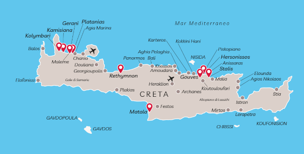
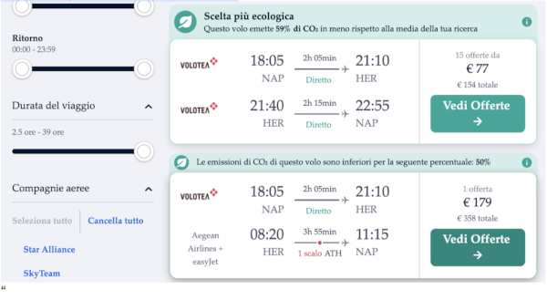

Ecco come arrivare
Tutte le informazioni di cui avrete bisogno per poter raggiungere Creta
Atterriamo tutti all’aeroporto di Heraklion!
Tutto si svolgerà’ li vicino al luogo della cerimonia e dei festeggiamenti.Ti forniremo alcune informazioni in questa parte del sito per iniziare a cercare dei voli per i due aeroporti dell’isola greca: Creta Heraklion (HER) e Creta Chania (CHQ).
L’importante e’ arrivare il due giugno ed essere li’ il 3 giugno per le nostre nozze!
Per chi non è esperto in questo tipo di ricerche fatevi aiutare da giovani, parenti o agenzie.Sulla piattaforma sky scanner potrete selezionare le date e gli aeroporti di partenza e arrivo, valutare le compagnie che svolgono la tratta con tempi e costi. Per l’acquisto vi consiglio di andare sempre sul sito ufficiale della compagnia.
Quali sono le linee aeree che volano dall’Italia verso Creta?
Diverse sono le compagnie aeree che effettuano voli diretti dall’Italia per Creta: Aegean Airlines, Ryanair, easyJet, Alitalia, Vueling Airlines, Volotea, Blu-Express, Meridiana, Neos Air.Per esempio con la compagnia aerea Volotea, con partenza da Napoli, e’ possibile anche prenotare dei pacchetti per i voli di gruppo. I voli sono disponibili sono in alcuni giorni della settimana. Per esempio partenza il 31 maggio e rientro o il 6 giugno, ma ci sono anche altre opzioni.
Per esempio con la compagnia aerea Volotea, con partenza da Napoli, e’ possibile anche prenotare dei pacchetti per i voli di gruppo. I voli sono disponibili sono in alcuni giorni della settimana. Per esempio partenza il 31 maggio e rientro o il 6 giugno, ma ci sono anche altre opzioni.
